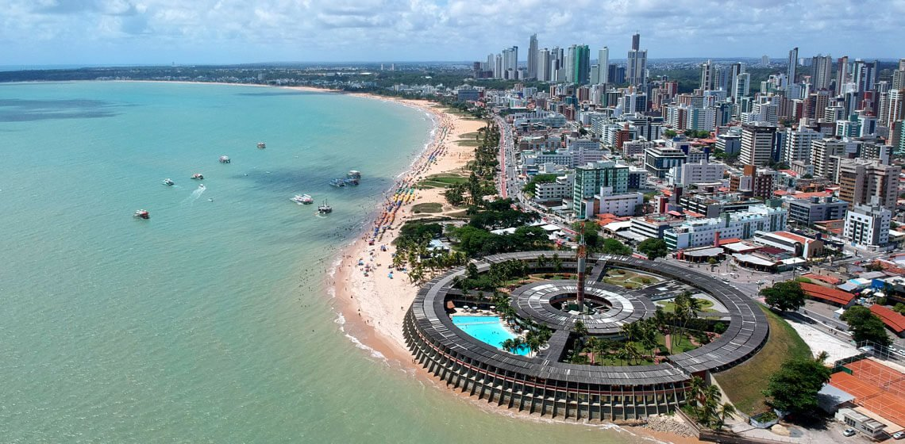

Sou Paraíbano e nasci e moro na cidade de João Pessoa a capital da Paraíba. Entrei na Trybe na turma 19 na tribo B para ingressar nessa jornada para me tornar um Dev.
Antes de entrar no mundo dos Devs eu trabalhava Freelancer como artista digital e Design Gráfico. Sou uma pessoa com a doença ceratocone que me deixou cego dos 15 aos 21 anos, porem em 2018 fiz as cirurgias de transplante de córnea, apos os transplantes voltei a enxergar novamente. Desde então estou tentando me achar no mundo profissional e a Trybe é essa nova pagina na minha vida!